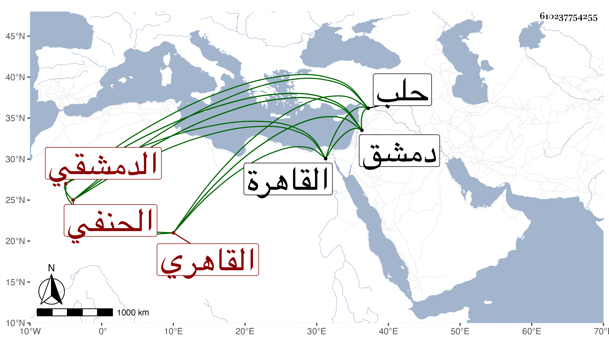

0902Sakhawi.DawLamic.ITO20230111-ara1.EIS1600.610237754255
Biography ID: 610237754255
292
محمد بن يوسف بن أبي بكر بن صلاح وأسقط غير واحد أبا بكر الشمس الدمشقي ثم القاهري الحنفي عم البدر محمد بن أبي بكر الماضي ويعرف بالحلاوي إما للمدرسة الحلاوية بحلب لكون أصلهم منها كما كان يقوله أو لكون والده وكان معتقدا بين الناس كان يبيع الحلوى الناطف في طبق كما قاله كثيرون بل قال المقريزي في عقوده أنه أنه كان من باعة أهل دمشق وأراذلهم يبيع شقات البطيخ تحت القلعة بفلس وبفلسين ويجعل الفلوس في عبه . ولد في سنة خمس وستين وسبعمائة بدمشق ونشأ بين الطلبة فأسمعه أبوه من جماعة كالعماد بن كثير وابن أميلة ونحوهما كما كان يخبر ووجد سماعه لبعض الصحيح من ابن الكشك ، ثم قدم القاهرة وتوصل لخدمة الأمير يشبك وعمل التوقيع عنده وصحب الوزير البدر الطوخي وسعد الدين بن غراب فأثرى واشتهر وترقى حتى ولي نظر الأحباس مدة وناب في الحكم وولي الحسبة غير مرة ثم وكالة بيت المال سنة سبع وعشرين بعد موت ابن التباني إلى أن مات وكان حسن الشكالة كبير اللحية جدا معظما عند الأكابر وأرباب الدولة مزجى البضاعة في العلم ولكنه حسن المحاضرة حلو النادرة ينمق الحكايات الشهيرة بحيث يود السامع لها أنها لا تنقضي . وممن عظم اختصاصه به الزين عبد الباسط وعين مرة لكتابة السر في أيام الناصر فرج فلم يتم ذلك . ذكره شيخنا في إنبائه وقال كان كثير المجازفة في النقل حدث بالقليل ومات في ليلة الجمعة سادس شوال وقال بعضهم في صبح يوم الجمعة سادس رمضان سنة أربعين بعد أن تمرض نحو خمسة أشهر بالفالج وغيره وفيه يقول بعض الشعراء :
| إن الحلاوي لم يصحب أخا ثقة | إلا محا شومه منه محاسنهم |
| السعد والفخر والطوخي لازمهم | فأصبحوا لا ترى إلا مساكنهم |
فالأولان ابنا غراب والوزير البدر الطوخي زاد شيخنا :
| وابن الكوز وعن قرب أخوه ثوى | والبدر والنجم رب اجعله ثامنهم |
هما ابن الكويز العلم داود والصلاح خليل والبدر حسن بن المحب المشير والنجم بن حجي . وللشمس الدجوي الشاعر فيه أهاج منها قوله :
| ظن الحلاوي جهلا أن لحيته | تغنيه في مجلس الإفتاء والنظر |
| وأشعريتها طولا قد اعتزلت | بالعرض باحثة في مذهب القدر |
وقد سبق فقيل :
| إن كان بطول اللحية يستوجب القضا | فالتيس عدل مرتضى |
